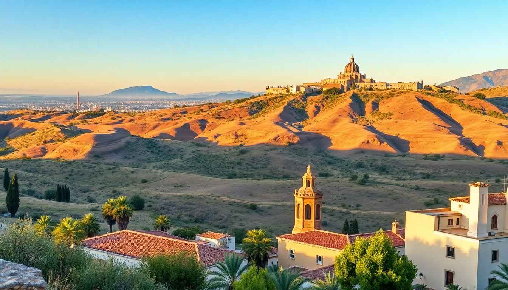

Best Day Trips from Seville: Ronda, Cadiz & Cordoba

I spent a week based in Seville, and every morning I’d pick a different direction. The train station Santa Justa became my second home. Ronda, Cadiz, and Cordoba each felt like a completely different country—different light, different food, different pace. Here’s exactly what I learned, what I’d do again, and what I’d skip.
Which day trip from Seville is the most dramatic?
Ronda, no contest. That gorge—El Tajo—splits the city in half, and the Puente Nuevo bridge is the kind of view that makes you stop talking. I walked across it at golden hour and watched swallows dive into the canyon. It’s 100 meters straight down.
- Puente Nuevo: The main bridge. Free to walk across. Best photos from the Mirador de Aldehuela, a small lookout just off the bridge.
- Plaza de Toros: One of Spain’s oldest bullrings. The tour includes the museum and the actual ring. I found it more interesting than expected—lots of Goya prints inside.
- Alameda del Tajo: A shaded promenade with benches overlooking the gorge. Good spot for a picnic if you grab jamón and cheese from Carnicería José Luis on Calle Virgen de la Paz.
- Palacio de Mondragón: A Moorish palace with gardens and a small museum. Less crowded than the Alcázar in Seville. Entry is €5.
- Bodega El Junco: A no-frills bar on Calle Nueva for tapas. Try the rabo de toro (oxtail stew). It’s rich, messy, and perfect after a long walk.
Getting there: I took the Renfe AVE train from Santa Justa to Ronda—about 1 hour 45 minutes. Book ahead; seats sell out. Driving takes about the same time but parking near the old town is a headache.
Is Cadiz worth the train ride from Seville?
Yes, but only if you want a beach day with a side of old town. Cadiz feels like a small coastal city that hasn’t been fully discovered by the Seville day-tripper crowd. The train drops you right at the edge of the historic center, which is a bonus.
- Playa de la Caleta: The city beach, tucked between two castles. Water is calm, sand is dark. I swam here in late September and it was warm enough.
- Catedral de Cádiz: The golden dome is visible from almost everywhere. Climb the Torre de Poniente for a 360° view of the city and the Atlantic. Entry is €7.
- Mercado Central: A covered food market near the port. I ate pescaíto frito (fried fish) at Freiduría Las Flores inside the market. €8 for a huge plate.
- Barrio de la Viña: The old fishermen’s quarter. Narrow streets, laundry hanging, and the best tortillitas de camarones (shrimp fritters) I found at El Faro de Cádiz.
- Castillo de San Sebastián: A fortress on a tidal island connected by a causeway. Free to walk out to. Great sunset spot.
The Renfe Media Distancia train from Santa Justa takes about 2 hours. It’s cheaper than the AVE but slower and less comfortable. I’d take the early 8:30 AM train to arrive by 10:30 and have a full day.
How do I do Cordoba in a single day from Seville?
Efficiently. Cordoba is compact—you can see the Mezquita, the Alcázar, and the Jewish Quarter in one day without rushing. The high-speed AVE train from Santa Justa takes only 45 minutes. I left at 9 AM and was back in Seville by 7 PM.
- Mezquita-Catedral: The main event. A mosque with a cathedral built inside it. The red-and-white arches are overwhelming. Book tickets online (€13) to skip the line. Go early—by 11 AM it’s packed.
- Patios de Córdoba: Small courtyards filled with flowers and fountains. Many are free to peek into if the door is open. The Palacio de Viana has 12 patios for €10.
- Alcázar de los Reyes Cristianos: A fortress with gardens and Roman mosaics. Less impressive than Seville’s Alcázar but worth an hour. Entry €4.50.
- Calleja de las Flores: A tiny alley off the main square. You’ll see photos of it everywhere. It’s pretty but crowded. I’d skip it if you’re short on time.
- Bar Santos: A tiny bar near the Mezquita famous for tortilla española. The tortilla is thick, runny in the middle, and costs €3. Eat it standing at the counter.
- Bodegas Mezquita: A sit-down spot on Calle Encarnación for salmorejo (cold tomato soup) and rabo de toro. The patio is shaded and quiet.
Train tip: The AVE is the best option. Buy a round-trip ticket from Renfe’s website. Avoid the Media Distancia—it takes 1 hour 40 minutes and stops everywhere.
What’s the best way to get between these cities?
Train, unless you want to rent a car for Ronda. The Renfe network from Seville’s Santa Justa station covers all three. For Cordoba and Cadiz, the AVE is fast and reliable. For Ronda, the AVE works too, but the drive through the Sierra de Grazalema is stunning if you have a car.
- AVE to Cordoba: 45 minutes, €40 round-trip. Trains run every hour.
- AVE to Ronda: 1 hour 45 minutes, €50 round-trip. Fewer trains—check the schedule.
- Media Distancia to Cadiz: 2 hours, €25 round-trip. Slower but cheaper.
- Car rental: I rented from Centauro at the Seville airport for €35/day. Parking in Ronda is easier than in Cordoba or Cadiz. Avoid driving into Cadiz’s old town—streets are narrow and one-way.
Should I visit any of these cities in summer?
Only if you like heat and crowds. I visited in late September and it was still 35°C in Cordoba. July and August are brutal—especially Cordoba, which is inland and bakes. Cadiz is cooler because of the ocean breeze. Ronda is high altitude (750 meters) and tolerable.
- Summer strategy: Start at 8 AM, take a siesta from 1 PM to 4 PM, then explore again in the evening. Most shops and restaurants close during those hours anyway.
- Winter: Fewer tourists, cheaper hotels, and cooler weather. Cordoba’s Mezquita is still impressive in the rain. Ronda can be misty—the gorge looks moody and dramatic.
FAQ
Can I visit both Ronda and Cadiz on the same day from Seville? No. They’re in opposite directions. Ronda is northeast, Cadiz is southwest. Each is a full day on its own. You’d spend 4+ hours on trains and only have a few hours in each city. Pick one.
Do I need to book train tickets in advance for these day trips? Yes, for the AVE to Cordoba and Ronda. Seats sell out, especially on weekends. Book at least a week ahead on Renfe’s website. For the Media Distancia to Cadiz, you can buy at the station—it’s unreserved seating.
Which city has the best food for a day trip? Cadiz, if you want seafood. Cordoba, if you want salmorejo and flamenquín. Ronda is great for meat dishes like rabo de toro and chacinas (cured meats). All three have good tapas, but Cadiz’s fried fish is unmatched.
Conclusion
- Ronda is the most dramatic—walk the Puente Nuevo, eat oxtail at Bodega El Junco, and skip the bullring if you’re short on time.
- Cadiz is the best beach option—swim at Playa de la Caleta, eat fried fish at Freiduría Las Flores, and climb the cathedral tower.
- Cordoba is the most efficient—see the Mezquita, eat tortilla at Bar Santos, and use the AVE train for a quick 45-minute ride.
- Book AVE trains in advance. Avoid summer midday heat. And don’t try to do two cities in one day.